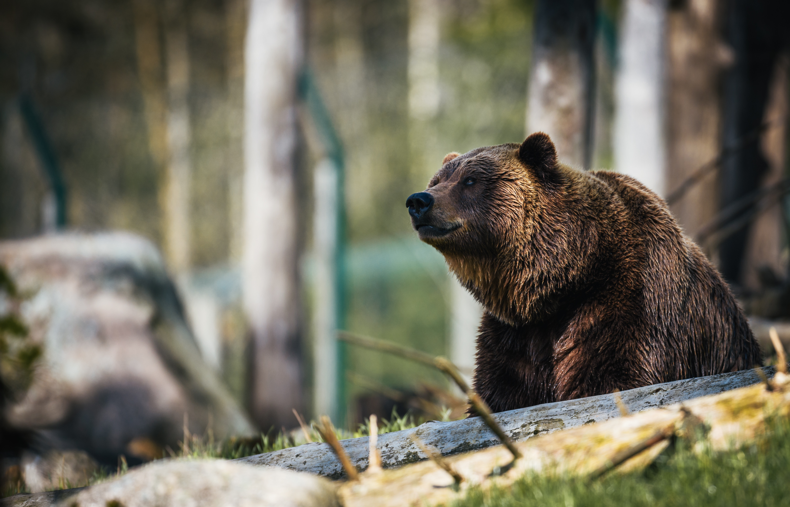
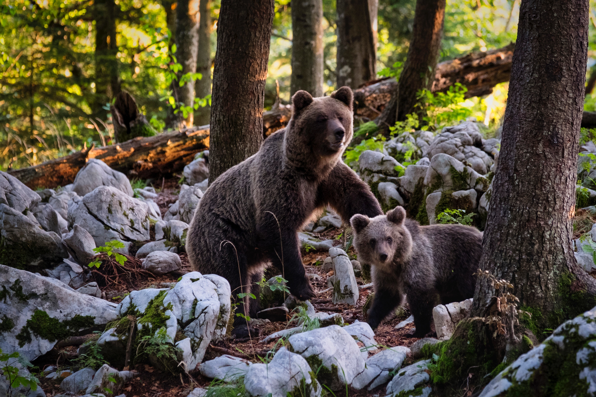

Bootstrap
Viva os Ursos


Crie projetos responsivos para dispositivos móveis na web com a biblioteca de componentes front-end mais popular do mundo.
O Bootstrap é uma ferramenta gratuita para desenvolvimento HTML, CSS e JS. Crie protótipos rápidamente ou aplicações completas com nossas variáveis e mixins Sass, sistemas de grid responsivo, componentes pré-construídos e poderosos plugins com jQuery.
É uma linguagem para estruturação e apresentação de conteúdo.
O Bootstrap é uma ferramenta gratuita para desenvolvimento HTML, CSS e JS.
Define estilos para páginas web com efeitos de transição, imagem, e outros, que dão um estilo novo às páginas.
Os ursos existem em todos os continentes, em exceção na África, embora algumas fontes afirmem terem avistado o Urso nandi, mas sem comprovarem a sua existência.
Pesam desde 25 kg, a menor espécie que é urso-do-sol (Helarctos malayanus) a 800 kg que é o urso-polar (Ursus maritimus). Possuem dimorfismo sexual, já que as fêmeas chegam a ter metade do tamanho dos machos. A coloração muda de espécie para espécie, têm a pelagem espessa, que serve como isolante térmico, possuem o olfato bem desenvolvido e o rabo curto. Têm dentes incisivos não desenvolvidos, caninos longos e pré-molares reduzidos, mas possuem dentição própria para esmagamento. Todas as espécies possuem garras não retráteis que usam para cavarem e para se alimentarem (caça). São plantígrados e podem correr com os dois pés. Alguns são escaladores, como o urso-de-óculos e o urso-do-Sol. O urso-polar é um exímio nadador. São animais crepusculares e noturnos, com algumas espécies com atividades diurnas, como o urso-polar.
Machos e fêmeas são solitários, geralmente se encontram apenas para reproduzirem. O macho se aproxima ao acompanhar o estro da fêmea e se acasalam quando ela está receptiva. Ambos praticam o acasalamento múltiplo. Elas dão à luz de 1 a 4 filhotes, geralmente dois a cada ano ou em intervalos de até quatro anos. A gestação dura de 95 a 266 dias, dependendo da espécie. Nascem com menos de 1 kg, praticamente sem pelos, de ouvidos e olhos fechados, mas crescem rapidamente.
Espécies das regiões temperadas nascem normalmente no inverno, quando os ursos estão quase hibernando, em tocas, ou locais escondidos e utilizam as reservas energéticas provindas da gordura da mãe, para a produção do leite. Nas regiões mais quentes a reprodução pode ser em qualquer época do ano. O desmame ocorre entre o terceiro e o nono mês. A maturidade sexual pode ser alcançada de 3 a 6 anos de idade, sendo que os machos podem crescer até os 11 anos e as fêmeas até os 5 anos. Ficam com a mãe de 18 a 24 meses, dispersando depois. Aprendem a caçar e a sobreviver com o tempo em que vivem com ela. Um urso vive até 25 anos na natureza, chegando ao dobro em cativeiro.
Algumas espécies baixam seu metabolismo e ficam letárgicos, com diminuição da frequência cardíaca e respiratória (quase em estado de hibernação), em tocas ou cavernas, durante o inverno. Usam como fonte de energia apenas a sua gordura corporal.
Vaja Mais


Os ursos existem em todos os continentes, em exceção na África, embora algumas fontes afirmem terem avistado o Urso nandi, mas sem comprovarem a sua existência.
Pesam desde 25 kg, a menor espécie que é urso-do-sol (Helarctos malayanus) a 800 kg que é o urso-polar (Ursus maritimus). Possuem dimorfismo sexual, já que as fêmeas chegam a ter metade do tamanho dos machos. A coloração muda de espécie para espécie, têm a pelagem espessa, que serve como isolante térmico, possuem o olfato bem desenvolvido e o rabo curto. Têm dentes incisivos não desenvolvidos, caninos longos e pré-molares reduzidos, mas possuem dentição própria para esmagamento. Todas as espécies possuem garras não retráteis que usam para cavarem e para se alimentarem (caça). São plantígrados e podem correr com os dois pés. Alguns são escaladores, como o urso-de-óculos e o urso-do-Sol. O urso-polar é um exímio nadador. São animais crepusculares e noturnos, com algumas espécies com atividades diurnas, como o urso-polar.
Machos e fêmeas são solitários, geralmente se encontram apenas para reproduzirem. O macho se aproxima ao acompanhar o estro da fêmea e se acasalam quando ela está receptiva. Ambos praticam o acasalamento múltiplo. Elas dão à luz de 1 a 4 filhotes, geralmente dois a cada ano ou em intervalos de até quatro anos. A gestação dura de 95 a 266 dias, dependendo da espécie. Nascem com menos de 1 kg, praticamente sem pelos, de ouvidos e olhos fechados, mas crescem rapidamente.
Espécies das regiões temperadas nascem normalmente no inverno, quando os ursos estão quase hibernando, em tocas, ou locais escondidos e utilizam as reservas energéticas provindas da gordura da mãe, para a produção do leite. Nas regiões mais quentes a reprodução pode ser em qualquer época do ano. O desmame ocorre entre o terceiro e o nono mês. A maturidade sexual pode ser alcançada de 3 a 6 anos de idade, sendo que os machos podem crescer até os 11 anos e as fêmeas até os 5 anos. Ficam com a mãe de 18 a 24 meses, dispersando depois. Aprendem a caçar e a sobreviver com o tempo em que vivem com ela. Um urso vive até 25 anos na natureza, chegando ao dobro em cativeiro.
Algumas espécies baixam seu metabolismo e ficam letárgicos, com diminuição da frequência cardíaca e respiratória (quase em estado de hibernação), em tocas ou cavernas, durante o inverno. Usam como fonte de energia apenas a sua gordura corporal.

(14) 99143-5154
wilsonjb93@gmail.com
Rua xpto, 666
Cidade, Estado, CEP
Hoje: 9am - 5pm
Amanhã: 10am - 5pm
Domingo: Não abre
Cidade, Estado, CEP
Cidade, Estado, CEP
Cidade, Estado, CEP
Cidade, Estado, CEP
Cidade, Estado, CEP